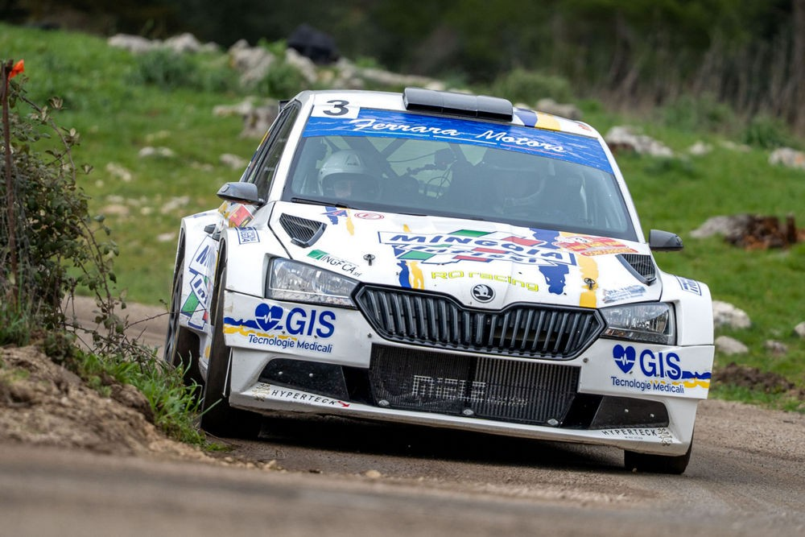
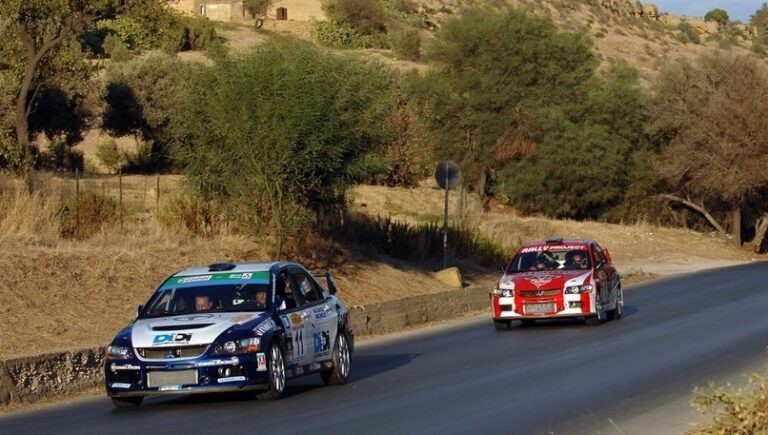

Rally monti sicani
 centro comerciale
centro comerciale
 8 / 9 Marzo 2025
8 / 9 Marzo 2025

La provincia di Agrigento rappresenta uno dei territori più affascinanti per il rally siciliano grazie alle sue strade panoramiche, ai continui cambi di ritmo e ai percorsi che attraversano colline, campagne e piccoli borghi storici. Le prove speciali agrigentine sono spesso caratterizzate da tratti veloci alternati a sezioni più tecniche, dove precisione e concentrazione diventano fondamentali. Il calore del pubblico e la forte passione locale per il motorsport rendono ogni manifestazione un evento molto sentito, capace di unire spettacolo, adrenalina e tradizione automobilistica.